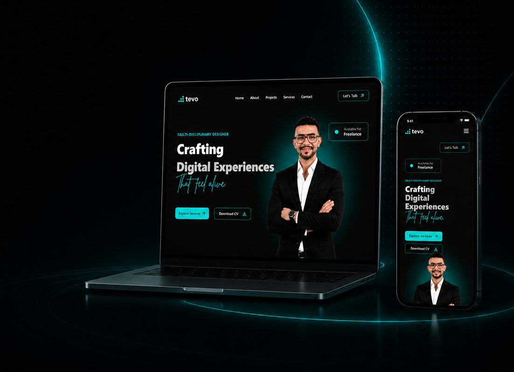

My Personal Portfolio
A dark, premium portfolio site translating a high-fidelity UI design into a fast, interactive front end — built to represent my own work the way I'd build it for a client.

One system, five pages, no shortcuts
This site is the case study — a personal portfolio built to showcase UI/UX, web design, development and creative work in one cohesive, premium experience, rather than five loosely related pages.
Most portfolio templates feel generic
The same layout, the same stock sections, nothing that reflects the person behind the work. The goal was a site that felt distinctly mine — dark, premium, a little futuristic — without sacrificing usability or load speed.
A design system, implemented faithfully
A dark, electric-teal design system implemented from a high-fidelity design, then extended consistently across every page — About, Projects, Services and Contact — so nothing feels bolted on after the fact.
From one hero design to a full site
Started from the provided hero design, extracted the exact color palette, type scale and spacing system, then built the remaining pages using the same components — so the whole site reads as one system, not five different templates stitched together.

Fast, animated, and actually accessible
A fully responsive, animated site — scroll reveals, a working contact form, an interactive FAQ accordion — built entirely in HTML, CSS and vanilla JavaScript, with reduced-motion support built in from the start.

A portfolio that's actually live
A site that's fast, genuinely representative of how I like to work, and — unlike a lot of portfolio concepts — actually shipped.